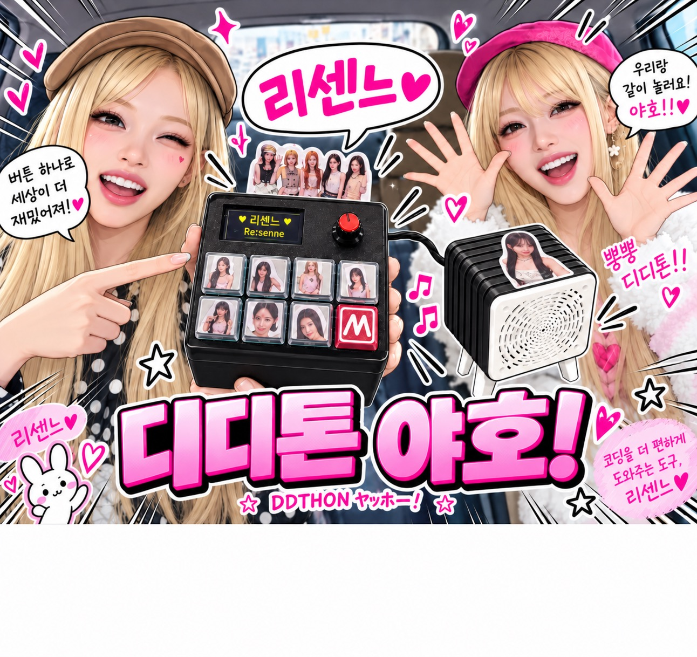
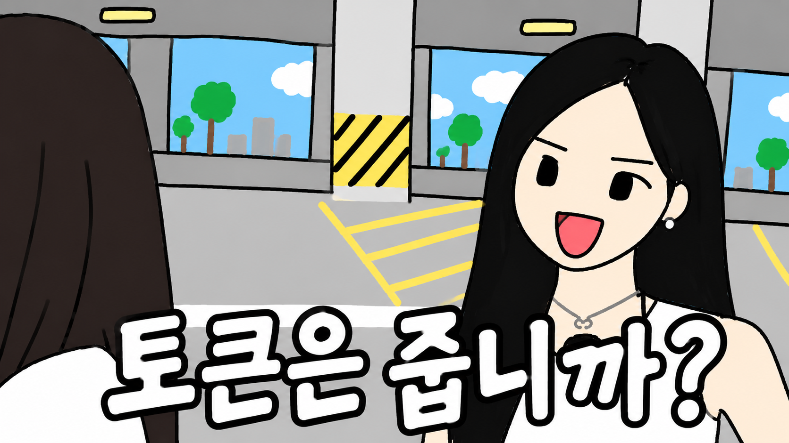
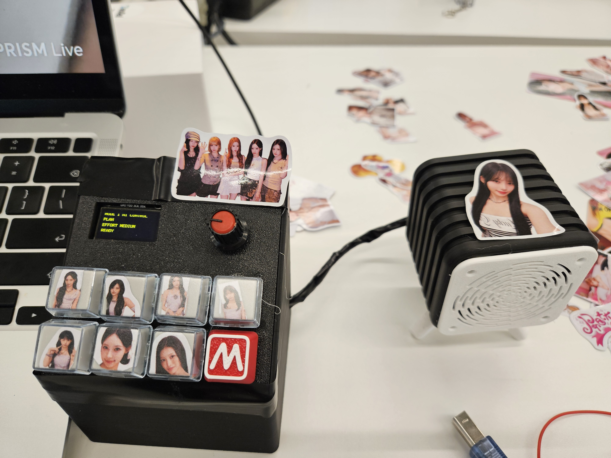
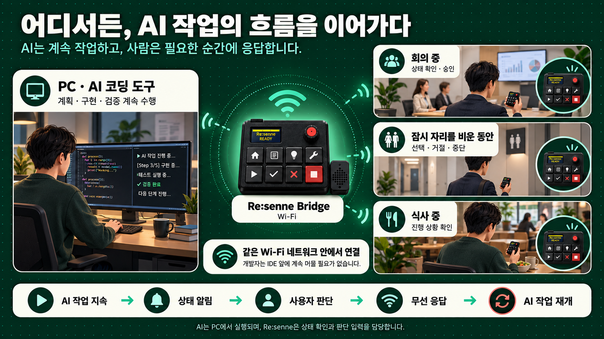
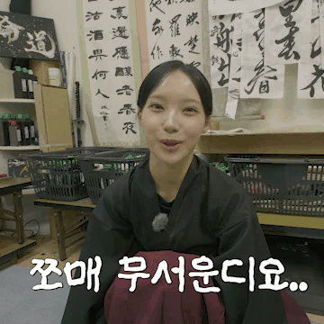
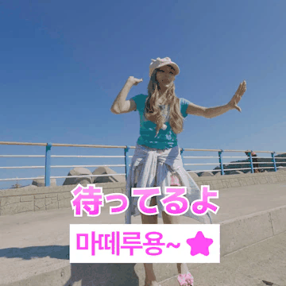
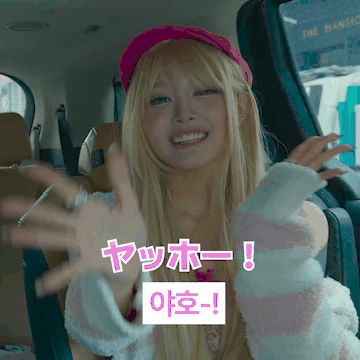
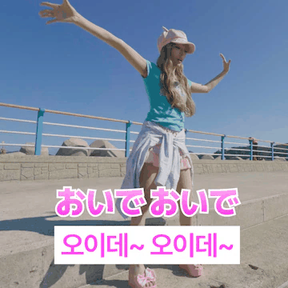
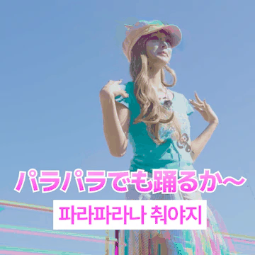

기존 키보드로 복잡하고 어려운 코딩 이제는 그만! 리센느와 함께, 키보드로 콕!
책상 위 전용 버튼으로 쉽게 입력합니다.

컨셉 일러스트 · 실제 팀 사진 아님
AI가 개발을 바꾸는 동안,
키보드는 그대로였습니다.
AI 코딩 도구가 개발 흐름 전체를 새로 쓰는 동안, 우리가 쓰는 키보드는 수십 년째 그대로입니다. 승인도, 거절도, 단계 전환도 — 전부 같은 자판을 두드려 처리합니다.
새로운 개발 방식에는 새로운 키보드 폼팩터가 필요합니다.

그래서, 새로운 키보드 폼팩터를 만들었습니다.
버튼 · 노브 · OLED · 스피커를 갖춘 책상 위 컨트롤러 DOCKPAD. 승인 · 거절 · 단계 전환을 물리 버튼으로 떼어내고, 내 코딩 방식에 맞춰 커스텀합니다.
AI가 빛의 속도로 코드를 짜도, 최종 방향과 책임은 사람 손끝에 있습니다.
AI 키보드 리센느로, 손쉬운 코딩 혁명
 브랜드 키 비주얼 · 컨셉 이미지
브랜드 키 비주얼 · 컨셉 이미지
새로운 폼팩터, 나에게 맞게.
단축키 하나 줄이자고 만든 게 아닙니다. 키보드 자체를 다시 설계해, 내 코딩 방식에 맞춰 승인·거절·단계 전환을 손끝으로 가져왔습니다.
원이 · 리브 · 미나미 · 메이 · 제나
걸그룹 '리센느' 5인의 캐릭터가 키캡과 스티커로. "Human-in-the-loop"를 진짜 사람 얼굴까지 담은 컨셉이에요.
🎁 부스에 오시면 선착순으로 스티커를 드려요!
새로운 키보드 폼팩터
타이핑용 자판에 승인·거절을 섞지 않습니다. 버튼·노브·OLED·스피커로 실행 승인을 물리 입력으로 떼어낸 책상 위 컨트롤러.
내게 맞춰 커스텀
버튼 매핑 · 키캡 · 음원 · 자율성 노브(0–5)까지 내 코딩 방식에 맞게 프로파일을 바꿉니다. AI-DLC 5단계도 물리 키로 제어.
사람이 보고 있다는 신호
OLED가 사람을 부르고 스피커가 결과를 알립니다. 승인이 화면 밖 책상 위 실물로 나와, 눈에 보이고 손에 잡히게.

화면 속 데모가 아닙니다.
진짜 책상 위 기기예요.
- ◆ 8버튼 + 노브 + OLED + 스피커 구성의 DOCKPAD · OLED에 MODE · 단계 · 자율성 상태 표시
- ◆ 버튼 1–5 → AI-DLC 다섯 단계, 6 → ASK, 7 → RUN NOW, 8 → 모드 · 노브 → 자율성 0–5
- ◆ 스피커는 리센느 음원으로 승인·거절을 알리고, 키캡은 리센느 팀 사진 — “Human-in-the-loop, 진짜 사람 얼굴까지.”
한 손에 들어오는 3가지 모드
AI keeps coding. You stay in control. — 버튼·노브·OLED·스피커로 AI 제어 · AI-DLC · 커스텀·음성

사용법은 정말 간단해요!
키보드로 편하게 타이핑
AI에게 요구사항을 말하고 코딩을 지시하세요. 타이핑할 때는 오직 키보드만 편하게 쓰면 됩니다.
AI가 멈추고 사람 호출
AI가 파일 수정·쉘 실행 전에 승인을 물어오는 순간, OLED에 "YOUR TURN"이 뜹니다.
포토 버튼으로 콕! 승인
확인하고 ✓ 승인 / ✕ 거절 키캡을 누르면, 그 결정이 대기 중인 AI에게 전달됩니다. 사람이 누르기 전엔 넘어가지 않아요.
AI에게 보내는 사람의 응답
Re:Sense → Re:View → Re:Act → 승인·거절·중단 → Re:Start, 다시 사람에게로.

AI는 클라우드에서, 제어는 당신의 손 안에
Arduino는 AI를 실행하지 않습니다 — 물리 입력과 피드백을 담당하고, 실행 승인·거절은 사람이 합니다.

책상 앞이 아니어도, 흐름은 이어집니다
AI는 PC에서 계속 작업하고, 사람은 회의·이동·식사 중에도 무선으로 상태를 확인하고 판단만 보냅니다.

사용 시나리오 컨셉 일러스트왜 걸그룹 '리센느'인가요?
"Human-in-the-loop? 그럼 진짜 사람 얼굴이 보고 있는 버튼을 만들자!"
K-POP 아이돌의 데뷔 에너지를 담은 위트 넘치는 하드웨어 컨셉입니다.
🎭 아래는 키캡 컨셉 페르소나 · 실제 팀 사진 키캡은 제작 예정


리센느 리액션 스티커 · 팀 오리지널 이모티콘



🔊 사운드 팔레트 · 실제 효과음 19종을 듣고 고르기
contents/sound/ 에 담긴 실제 mp3 효과음 19종입니다.
아래 칩을 눌러 미리 들어보고, 승인·거절·클릭음을 원하는 소리로 바꿔보세요. 하단의 긴 트랙(18·19번)은 은은한 데뷔 BGM으로 켤 수 있어요.
※ 사운드는 이 페이지 안에서 로컬 mp3 파일을 재생하는 것뿐이며, 외부 전송·API 호출은 없습니다.
리센느를 직접 만나러 오세요!
진짜 DOCKPAD를 손끝으로 눌러보고, 리센느 음원까지 들어볼 수 있어요. 8버튼 · 노브 · OLED · 스피커를 직접 만져보세요!
찾는 법: 네 번째 스크린 존, 🏆 시상대(7번) 바로 뒤 — 우리 부스 앞이 시상대예요. 그게 바로 리센느 17번이에요! 🌸
실행 앞에, 사람.
AI로 세상을 물들이기 위해 모인 팀, 리센느(Re:senne).
어떤 색으로 바꿀지는 사람이 고릅니다.
"키보드는 타이핑만. 진짜 실행은, 손끝으로 콕!" · Apache-2.0 License